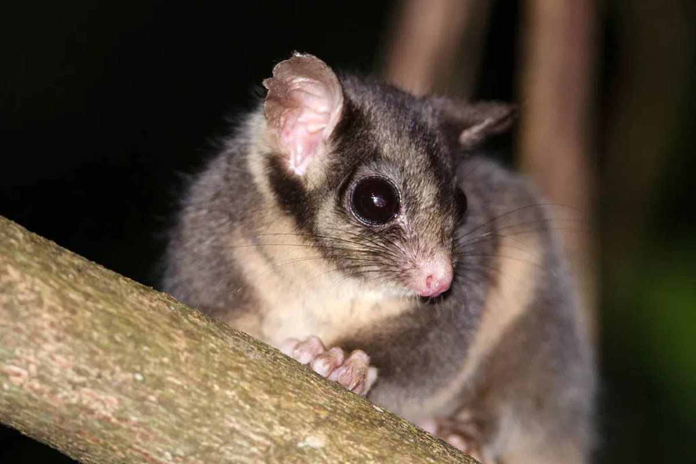

Leadbeater's Possum Gymnobelideus leadbeateri Leadbeater's Possums are small, nocturnal marsupials native to the Central Highlands of Victoria, Australia. They are known for their long tails, pointed snouts, and distinctively large eyes, which help them navigate their arboreal habitats at night.

Habitat
Leadbeater's Possums are primarily found in the old-growth mountain ash forests of the Central Highlands of Victoria. These forests provide the dense canopy and tree hollows necessary for their nesting and shelter.
Diet
The diet of Leadbeater's Possums consists mainly of insects and tree sap. They are known to feed on wattle sap, lerp, and honeydew, as well as insects and spiders, which they find in the bark and foliage of trees.
Conservation Status
Leadbeater's Possums are currently listed as critically endangered due to habitat loss from logging, bushfires, and climate change. Conservation efforts focus on habitat protection, restoration, and the establishment of wildlife corridors to connect fragmented populations.
How to Help
You can help protect Leadbeater's Possums by supporting conservation organizations, advocating for the protection of old-growth forests, and raising awareness about their plight. Donations to conservation groups and participation in local conservation projects can make a significant impact.
"Saving Australia's Endangered, Together for a Wilder Future"